Como se escribe una tesis
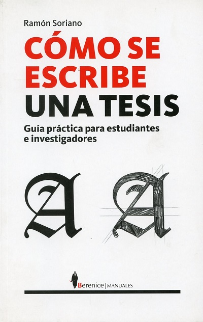
Titulo:Como se escribe una tesis
AUTOR: SORIANO RAMON
EDITORIAL: BERENICE
TEMA: LIBROS TÉCNICOS
ISBN: 9788496756496
ENCUADERNACION: RÚSTICA
IDIOMA: ESPAÑOL
PÁGINAS: 189
Sinopsis
Cómo se escribe una tesis es el manual más completo dedicado al proceso de investigación y redacción de tesis, y el único en castellano que va de la idea a los hechos, de la teoría a la práctica, del fracaso a la solución. Gracias a la amplia experiencia de Ramón Soriano,catedrático de Filosofía del Derecho y Filosofía Política en la Universidad Pablo Olavide de Sevilla y autor de una veintena de libros y más de un centenar de artículos científicos. La metodología de la investigación brilla por su ausencia en los planes de estudio de grado y posgrado de las titulaciones españolas. El resultado es que, con frecuencia, los alumnos de doctorado no saben citar, acopiar materiales de estudio o hacer una simple ficha de lectura. Cómo se escribe una tesis cubre el vacío de las enseñanzas medias y superiores, y viene también a llenar una importante ausencia bibliográfica. La edición que aquí presentamos se acompaña de apéndices documentales y de los ejercicios necesarios para satisfacer todas las necesidades prácticas durante el proceso de investigación y redacción de tesis.
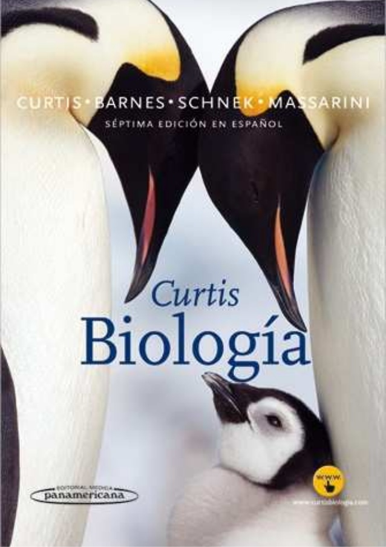
Titulo:Curtis Biologia
AUTOR: CURTIS-BARNES-SCHNEK
EDITORIAL: PANAMERICANA
TEMA: LIBROS TÉCNICOS
ISBN: 9789500603348
ENCUADERNACION: TAPA DURA
IDIOMA: ESPAÑOL
PÁGINAS: 1600
Sinopsis
En ella se realiza un breve recorrido por la historia de la biología. Esto llevó a diferenciar el ordenamiento cronológico del ordenamiento lógico de esta disciplina. A lo largo de la obra se privilegia un ordenamiento lógico, que permite construir los conceptos en forma paulatina, en la medida en que ciertos temas sientan la base para otros. Pero, de alguna manera, la historia de las ideas siempre está presente a lo largo de los capítulos y sus vicisitudes ponen de manifiesto que la biología, como toda ciencia, no es un producto acabado. La comprensión de la génesis de las ideas permite acercarse a los conceptos de modo crítico, principalmente cuando se comprueba que prácticamente no hay verdades absolutas y que varios conceptos cambiaron a lo largo del tiempo, algunos caducaron mientras que otros aún perduran. Así, la biología es una ciencia en permanente construcción en la que muchas preguntas se contestaron, otras se reemplazaron y unas cuantas siguen abiertas. Al final de la Introducción se profundiza sobre el aspecto dinámico de la biología y se invita al lector a discutir acerca de la naturaleza de la ciencia y del quehacer de los científicos.
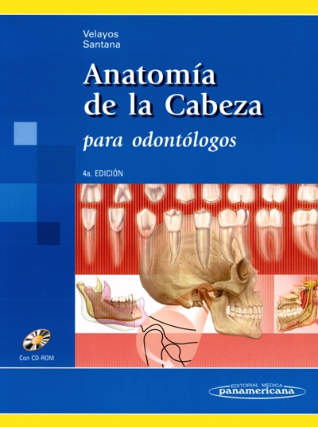
Titulo:Anatomia de la cabeza
AUTOR: PANAMERICANA
EDITORIAL: PANAMERICANA
TEMA: LIBROS TECNICOS
ISBN: 9788498350685
ENCUADERNACION: Rústica
IDIOMA: Español
PAGINAS: 322
Sinopsis
El presente libro es un compendio de Anatomía de la Cabeza con un enfoque odontoestomatológico moderno y actualizado que se ha renovado completamente atendiendo a criterios de integración racional de los conocimientos básicos, imprescindibles para el futuro profesional de la Odontología. La orientación de esta 4a edición es completamente nueva, ordenada de manera más funcional e incorporando nuevas figuras relacionadas con actos quirúrgicos y disecciones anatómicas. Junto a la extraordinaria iconografía de D. Humberto Díaz Santana, queremos destacar los siguientes puntos que confieren su singularidad respecto de las ediciones anteriores: Enfoque clínico, coordinación y puesta al día de las consideraciones anatomoclínicas. Inclusión de iconografía aportada por las modernas tecnologías de diagnóstico por imagen (RM, TC, reconstrucciones tridimensionales por escáner, etcétera). Capítulo de dientes y ATM totalmente reelaborados, orientados a facilitar la comprensión de los procesos masticatorios así como al tema de las fracturas de la cara. Nuevo apartado referente al dolor en odontoestomatología. De forma complementaria -en consonancia con los cambios docentes que se avecinan- se ha añadido un CD que incorpora contenidos de ayuda contrastados a lo largo de las páginas del texto, y estructurado en tres grandes apartados: Parte I. Autoevaluación. Preguntas y respuestas contrastadas en las páginas del libro. Parte II. Consideraciones clínicas. Parte III. Ilustraciones y órganos de los sentidos (éste último, correspondiente al capítulo 17 de la 3a edición). Sin duda, una herramienta fundamental para la comprensión anatomoclínica de odontólogos, estomatólogos, anatomistas, cirujanos plásticos y estéticos y estudiantes de Medicina.
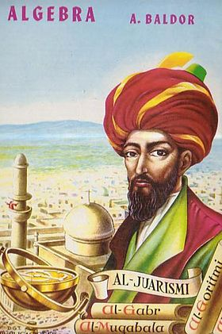
Titulo:Baldor
Autor: A. Baldor.
Año: 1941.
Categoría: Matemáticas
Sinopsis
Algebra de Baldor: “El libro más consultado en las escuelas latino americanas (incluso más que el quijote). Desde Tijuana hasta la Patagonia” (Club Regatas) Libro temido por miles de estudiantes latinoamericanos por sus cientos de páginas llenas de explicaciones y cientos de problemas matemáticos; libro escrito por el cubano Aurelio Baldor un matemático y abogado que escribió este libro durante la revolución cubana. El libro algebra escrito por baldor es un libro con propósitos educativos que se basan en una de las ramas fundamentales de las matemáticas que es el álgebra. La obra se divide en 130 temas que incluyen desde sumas y restas hasta logaritmo compuesto, contiene 305 ejercicios, “tiene 5.790 problemas en total. (19 problemas en cada ejercicio en promedio)” (Club Regatas) y más de 100 explicaciones.
Puede descargar el libro en:
Baldor
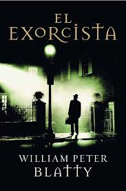
Titulo:El exorcista
Autor: BLATTY, WILLIAM PETER
Editorial: MOSAICO
Año de edición: 2010
Género: Novela negra, intriga, terror
ISBN: 9788492682607
En 1950, mientras estudiaba en la Universidad de Georgetown, William Peter Blatty descubrió la historia de un chico de 12 años llamado Robbie, quién en la década de los cuarenta fue exorcizado por un grupo de sacerdotes en el estado de Washington, luego de ser diagnosticado como un caso de posesión demoníaca. Este suceso fue muy popular en los Estados Unidos en aquella época y el hecho fue cubierto por los medios más importantes del país. Blatty tomó ese hecho y lo convirtió en una fascinante y terrorífica novela, que resultó un best seller instantáneo en 1971. El libro generó su polémica y el fenómeno aumentó dos años después cuando el escritor adaptó su obra para el cine. Ya han pasado casi cuarenta años y la novela sigue viva. Con esta edición pretendemos no solo crear nuevos lectores y brindar la posibilidad de relecturas, sino también resituar, en la escena de la edición en castellano, un clásico con una edición cuidada, porque la novela lo merece. Por otro lado, los lectores podrán apreciar que en la adaptación cinematográfica fueron eliminadas varias subtramas, así como se modificó el rol de algunos personajes secundarios que en la novela adquirieren un papel mucho más importante.
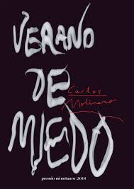
Título Original: (Verano de miedo, 2014)
Autor: Carlos Molinero
Editorial: Minotauro
Verano de miedo es un libro de… vampiros. “Hala, venga, otro de vampiros. Y cuando no son vampiros son zombis” dirá alguno. Pues sí, pero es que cuando me enteré de que una novela de vampiros había ganado el Minotauro, y tras leer la sinopsis, no pude dejar de jurar por la Sagrada Cofradía de la Sangre Negra que tenía que leerlo cuanto antes. Y así ha sido. Pero, cuidado, que Verano de miedo no es solo un libro más de vampiros. Tiene una atmósfera especial. A mí me ha recordado a las pelis que veíamos de niños. Me ha producido una sensación de nostalgia de un tiempo de adolescencia de cuando vimos Los Goonies, E.T., Jóvenes ocultos, Noche de miedo… cintas en las que los protagonistas eran una cuadrilla de chavales unidos para conseguir algo o acabar con alguien… ¿Quién no ha llevado alguna vez una mochila con estacas a una acampada? Si a eso le unimos un poquito de El misterio de Salem’s Lot (sobre todo de la escena de la ventana, que creo que es lo más terrorífico de la teleserie basada en el libro de King) ¿y otro poquito, pero muy poquito de Zombis nazis? (que no sé, que igual esta última referencia solo asalta mi subconsciente de serie b –y solo vi un poco de esa peli–…) resulta un coctel cojonudo.
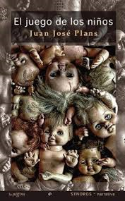
Titulo:El juego de los niños
Nº de páginas: 179 págs.
Encuadernación: Tapa blanda
Editorial: LA PAGINA EDICIONES
Lengua: CASTELLANO
ISBN: 9788493852146
El Juego de los Niños, novela originalmente publicada en 1976 y recuperada en este 2011 por La Página Ediciones, fue la historia en la que se basó Kiko Ibañez Serrador para hacer ¿Quién puede matar a un niño?.
En esta historia nos encontramos con un relato entretenido donde los niños no son esos pequeños seres entrañables y monos que conocemos.
Novela simple y sin muchas mandangas, pero en todo momento amena y entretenida, donde Juan José Plans nos plantea lo que pasaría si la naturaleza se cansase del ser humano y lo utilizase para extinguirlo a través de los más pequeños de la casa.
Maldo y Nona, una pareja a punto de tener su tercer hijo, deciden irse solos unos días de vacaciones a la isla donde veraneaba Maldo cuando era pequeño.
Al llegar ya les sorprende que no haya nadie cerca del puerto más que un niño malhumorado pescando. Después de visitar varias estancias del pueblo, se dan cuenta que allí está pasando algo raro… sobretodo cuando ven a través de una ventana que da a la calle un acto de violencia y ensañamiento de un niño hacia un anciano.
Entre la vida y la muerte
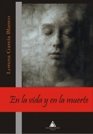
Titulo:Entre la vida y la muerta
Autora: Lorena García Blanco
Nº de páginas: 166 págs.
Encuadernación: Tapa blanda
Editorial: ATLANTIS
Lengua: CASTELLANO
ISBN: 9788415228011
Lost River es un pequeño pueblo costero, hambriento de rumores, donde tiene lugar una fiesta de cumpleaños... y la desaparición de Loren Sprousse. Dos años después, Abby Connors, la que fuera su mejor amiga, regresa a Lost River, el pueblecito donde todo sucedió, para enfrentarse a sus fantasmas y tratar de averiguar a toda costa qué ocurrió, mientras su amor por el novio de Loren crecerá y vencerá todos los obstáculos. Atmósfera inquietante en la que nadie es lo que parece ser y en la que todos esconden un terrible secreto. Los celos y la muerte son dos caras de la misma moneda en Lost River. “En la vida y en la muerte” se muestra ante los lectores con gran sutileza a la hora de expresar las preocupaciones adolescentes... y la asunción de culpabilidades como algo inevitable.
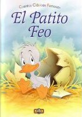
Titulo:El patito feo
Género:Cuento
Subgénero:Cuento de hadas, Literatura infantil
Idioma:Danés
Título original:Den grimme ælling y The ugly duckling
País:Bandera de Dinamarca Dinamarca
Sinopsis
La vida del patito empieza cuando un huevo de cisne llegó al nido de una pata que vivía en una granja del campo. Al nacer, resultó ser un patito muy feo; desproporcionado en tamaño con respecto a sus agraciados hermanitos, con un graznido muy fuerte, estridente y molesto. Era el hazmerreír de los otros animales que ahí vivían. El pobre pato no recibió más que picotazos, empujones y burlas. Incluso sus hermanos le maltrataban a veces diciéndole "¡Ojalá te pille el gato, grandullón! y hasta su madre deseaba que estuviese lejos del corral.
Un día el patito huyó de allí. En sus aventuras ningún animal salvaje quería estar con él. Se vio envuelto en una cacería, estuvo varias semanas acogido en casa de una viejecita (con su gato y su gallina, que creían ser el centro del mundo) pero echaba de menos nadar y chapotear en el agua, así que se marchó. Una tarde de otoño pudo ver una bandada de grandes y hermosas aves que levantaron el vuelo. Eran cisnes, pero él no lo sabía. Se quedó impresionado y muy inquieto ya que sintió cosas que nunca había sentido. Pero entonces el crudo invierno llegó y el pobre patito lo pasó muy muy mal, tanto que casi muere congelado. Un campesino lo salvó de la muerte pero pronto tuvo que escapar también de su casa.
Finalmente llegó la primavera y ¡volvió a ver a tres bonitos cisnes!. El patito feo se acercó a ellos, seguro de que lo picotearían hasta la muerte. Pero éstos nadaron a su alrededor y lo acariciaron con sus picos. De pronto se miró en el agua y se dió cuenta que también él era un cisne. Después de tantos trabajos y desgracias ahora se sentía muy, pero muy feliz, "Jamás soñé que podría haber tanta felicidad, allá en los tiempos en que era sólo un patito feo".
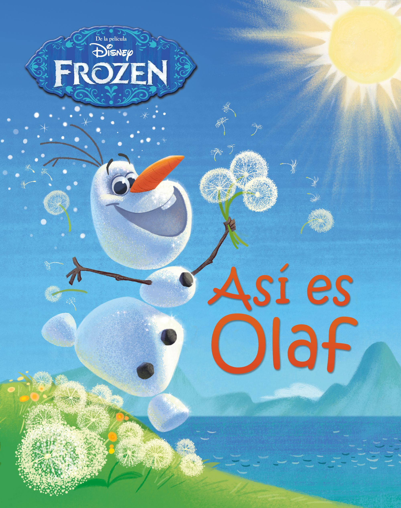
Titulo:Frozen:"Así es Olaf"
Nº de páginas: 32 págs.
Encuadernación: Tapa dura
Editorial: DISNEY LIBROS
Lengua: CASTELLANO
ISBN: 9788499516653
Olaf es un muñeco de nieve que anda, habla ¡e incluso baila! Pero lo que de verdad hace especial a Olaf es su imaginación sin límites y su gran corazón. ¡Junto a él vivirás una maravillosa aventura en el reino de Arendelle!
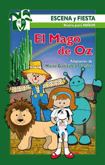
Titulo:El mago de Oz
Nº de páginas: 144 págs.
Encuadernación: Tapa blanda
Editorial: CCS
Lengua: CASTELLANO
ISBN: 9788483165492
Sinopsis
Dos obras clásicas, adaptadas por la autora, para representar con alumnos de Primaria: El mago de Oz y Las aventuras de Pinocho.
Titulo:El ratoncito Perez
Nº de páginas: 24 págs.
Editorial: S.A. EDITORIAL LA GALERA
Lengua: CASTELLANO
ISBN: 9788424637941
Sinopsis
El ratoncito Pérez se esconde. Sus padres lo buscan con afán porque suena el timbre que avisa de que hay que recoger un diente. Pero él está muy cansado: ayer tuvo que ir a China y Argentina... Pero su trabajo es muy importante y al final sale raudo y veloz, esquivando peligros, en una nueva misión.
Titulo:Romeo & Julieta
Tema(s):Amor prohibido
Título original:The Most Excellent and Lamentable Tragedie of Romeo and Juliet1
Texto original:The Tragedy of Romeo and Juliet en Wikisource
País:Inglaterra
Sinopsis
Romeo y Julieta es la historia de un amor que nace imposible y, signado por una serie de malentendidos, acaba con la muerte de los amantes. También es el arquetipo de la tragedia amorosa. Porque los dos adolescentes de Verona, que reavivan el odio entre las familias Montesco y Capuleto y subvierten el orden de la ciudad de Mantua, corporizan la pasión por excelencia; aquélla que desatiende consejos y órdenes públicos y quiere moldear el mundo a la medida de sus deseos. Con esta obra Shakespeare alcanza una cima lírica inigualada. La potencia y la belleza de sus versos es tan abrumadora que al leerlos se piensa que acaso el amor haya nacido cuando fueron escritos. Y que la misión secreta del drama es velar para que ese sentimiento no desaparezca nunca. Romeo y Julieta no es mero 'teatro de sentimientos'. una ópera verbal acerca de una relación amorosa entre dos adolescentes; es también el retrato de una sociedad cuyos integrantes regulan y juzgan la conducta según el parámetro de la bella o la brutta figura.
Titulo:Sigueme la corriente
Nº de páginas: 480 págs.
Encuadernación: Tapa blanda
Editorial: PLANETA
Lengua: CASTELLANO
ISBN: 9788408136644
Una divertida novela romántica que te hará sonreír, suspirar y enamorarte de sus protagonistas. Tony Ferrasa es un guapo, adinerado y exitoso compositor de música puertorriqueño. No hay mujer que se le resista y que olvide con facilidad su mirada verde y leonina. Ruth es una joven que con apenas veinte años tuvo que h acerse cargo de su hermana recién nacida y de un hermano delincuente. Cuando parece que por fin consigue encauzar su vida, se queda embarazada y su pareja acaba abandonándola. Para sacar adelante a su familia acepta cualquier trabajo digno que se le presente, por lo que Tony y Ruth acaban conociéndose en una fiesta en la que ella sirve como camarera. A partir de entonces, como el destino es tan caprichoso, se encuentran en diversas ocasiones, y a pesar del interés que él le demuestra, ella se mantiene fría e indiferente. Poco a poco ambos se van enganchando a una no-relación que acaba por desvelarles que lo que sienten el uno por el otro es mucho más intenso de lo que están dispuestos a admitir. Intentan alejarse, pero cuanto más empeño ponen en ello, menos lo consiguen y más fuerte se hace la atracción. Sígueme la corriente es una divertida y sexy comedia romántica que hará que te enamores incluso del aire que respiran sus protagonistas.
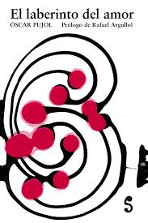
Titulo:El laberinto del amor.
Nº de páginas: 168 págs.
Encuadernación: Tapa blanda
Editorial: LIBROS DEL SILENCIO
Lengua: CASTELLANO
ISBN: 9788493943318
En los tiempos de la gratificación inmediata, las soluciones fáciles y la abolición de las frustraciones, pocos conceptos podrían parecer tan abocados a la extinción como el de la pareja. Porque el amor es una empresa que exige enormes niveles de compromiso, generosidad y esfuerzo, y no ofrece, a cambio, garantía alguna de éxito. No hay fórmulas infalibles para alcanzarlo, pero sí podemos, como propone Òscar Pujol, transformar nuestra visión: entender el amor como un laberinto en el que dejarnos perder; convertir el propio viaje, sus conflictos y sufrimientos, y también sus momentos de alegría y placer, en el auténtico destino. En consecuencia, este libro no es en modo alguno un compendio de recetas, sino más bien una meditación en torno al amor «bajo la ilustre máscara del estilo dialogado» que bebe ya desde el mismo título, tomado de Cervantes de las más variadas fuentes de la cultura occidental y oriental. El laberinto del amor es, en fin, una invitación a rehuir los cantos de sirena que nos ofrecen una «felicidad» instantánea pero efímera y a embarcarnos en la búsqueda de un sentimiento más verdadero: la felicidad como estado. «Un escrito refinado concebido desde la piel de los sentidos y, por eso mismo, volcado hacia las profundidades del ser humano.» Rafael Argullol"
Antes de que me digas adios:Dime que bailaras conmigo
Titulo:Antes de que me digas adios:Dime que bailaras conmigo
Nº de páginas: 168 págs.
Encuadernación: Tapa blanda
Editorial: EDICIONES KIWI
Lengua: CASTELLANO
ISBN: 9788494321436
Dos libros en uno. Descubre una historia intensa y sexy contada desde el punto de vista de ambos personajes. Ariadna es insegura y obstinada, su decisión: mantenerse alejada de los hombres cueste lo que cueste. Lucas es un autentico ligón, extremadamente sexy y también el mejor amigo de Ariadna. Una delgada línea sep ara la amistad del deseo, y ese deseo puede costarles muy caro. Pueden aceptarlo y dar el paso definitivo o perderse para siempre. ¿Cuánto estarán dispuestos a arriesgar el uno por el otro? Acabas de conocer la historia de Ariadna, sí, pero como en todas las historias, nunca hay una sola versión. ¿Estás preparado para conocer a Lucas y su visión de los hechos? En Dime que bailarás conmigo descubriremos qué pasó por la cabeza de Lucas mientras Ariadna vivía su historia. Dos protagonistas, una historia, dos versiones y un increíble final.
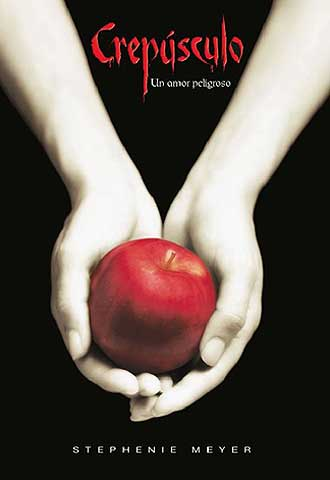
Titulo:Crepúsculo
Publicación: 5 de octubre de 2005
Autor: Stephenie Meyer
Libro posterior: Luna nueva
Crepúsculo (Twilight) es una novela de vampiros dirigida al público adolescente, escrita por Stephenie Meyer y publicada en 2005. Es la primera parte de una serie de cuatro libros, de la que están publicados, además de Crepúsculo, Luna nueva, Eclipse, y Amanecer. La protagonista de la historia es Isabella Marie Swan, una joven de diecisiete años que se muda a Forks, Washington, después de que su madre se vuelve a casar con Phil, jugador de beisbol, que es su nuevo padrastro; y debido al trabajo de éste viaja constantemente, por lo cual Bella decide vivir con Charlie, su padre, para que así su madre pueda viajar al lado de Phil. En el colegio conoce a Eric, Mike, Tyler, Jessica, y Angela, que se convierten en sus nuevos amigos. En su primer día de clases Bella ve a cinco estudiantes que le llaman la atención por su belleza y su palidez. Se sientan alejados de todo el mundo, no tienen apenas relación con el resto de estudiantes. Son los hermanos Cullen: Edward, Emmett, Jasper, Alice y Rosalie.
El libro trata el peligroso amor que surje entre Bella y Edward, ambos de mundos distintos, pues la familia Cullen son vampiros.
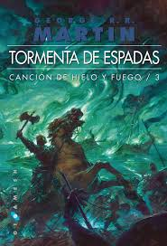
Titulo:Tormenta de espadas
Autor: MARTIN, GEORGE R.R.
Editorial: GIGAMESH
Año de edición: 2006
Género: Fantástica, ciencia ficción
ISBN: 9788496208391
Las huestes de los fugaces reyes de Poniente, descompuestas en hordas, asuelan y esquilman una tierra castigada por la guerra e indefensa ante un invierno que se anuncia inusitadamente crudo. Las alianzas nacen y se desvanecen como volutas de humo bajo el viento helado del Norte. Ajena a las intrigas palaciegas, e ignorante del auténtico peligro en ciernes, la Guardia de la Noche se ve desbordada por los salvajes. Y al otro lado del mundo, Daenerys Targaryen intenta reclutar en las Ciudades Libres un ejército con el que desembarcar en su tierra. Martin hace que lo imposible parezca sencillo. Tormenta de espadas confirma Canción de hielo y fuego como un hito de la fantasía épica. Brutal y poética, conmovedora y cruel, la magia de Martin, como la del mundo de Poniente, necesita apenas una pincelada para cautivar al lector, hacerlo reír y llorar, y conseguir que el asombro ceda paso a la más profunda admiración por la serie.
Titulo:El imperio final
Autor: SANDERSON, BRANDON
Editorial: EDICIONES B
Año de edición: 2011
Género: Fantástica, ciencia ficción
ISBN: 9788466631990
Durante mil años han caído las cenizas y nada florece. Durante mil años los skaa han sido esclavizados y viven sumidos en un miedo inevitable. Durante mil años, el Lord Legislador reina con un poder absoluto. Le ayudan los "obligadores" y los "inquisidores" junto a la poderosa magia de la "alomancia" que reside en los nobles. Algunos de ellos son capaces de "quemar" los metales que han tragado y que les otorgan poderes sobrenaturales. Diferentes metales, actuando en pares, otorgan poderes distintos. Pero los nobles, demasiado a menudo, han tenido trato sexual con jóvenes skaa y, aunque la ley lo prohibe, algunos de sus bastardos han sobrevivido y heredado los poderes alománticos: son los "nacidos de la bruma", los mistborns...
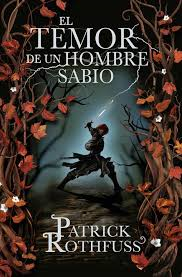
Titulo:El temor de un hombre
Autor: ROTHFUSS, PATRICK
Editorial: PLAZA & JANÉS
Año de edición: 2011
Género: Fantástica, ciencia ficción
ISBN: 9788401339639
Músico, mendigo, ladrón, estudiante, mago, héroe y asesino. Kvothe es un personaje legendario, el héroe o el villano de miles de historias que circulan entre la gente. Todos le dan por muerto, cuando en realidad se ha ocultado con un nombre falso en una aldea perdida. Allí simplemente es el taciturno dueño de Roca de Guía, una posada en el camino. Hasta que hace un día un viajero llamado Cronista le reconoció y le suplicó que le revelase su historia, la auténtica, la que deshacía leyendas y rompía mitos, la que mostraba una verdad que sólo Kvothe conocía. A lo que finalmente Kvothe accedió, con una condición: había mucho que contar, y le llevaría tres días.
Biblioteca Online
Integrantes:
Yaneth Velazquez Garcia.
Flor Arlethe Ramirez Badillo.
Guadalupe Abigail Gonzales Quintero.
Patricia Rodriguez Suarez.
Elias Amador Vazquez.
Ulises Urbina Islas.
Escuela:
Centro de Bachillerato Tecnologico industrial y de servicios No.86
Especialidad:
Tecnico en Programación
Facilitador:
David Nieto López.